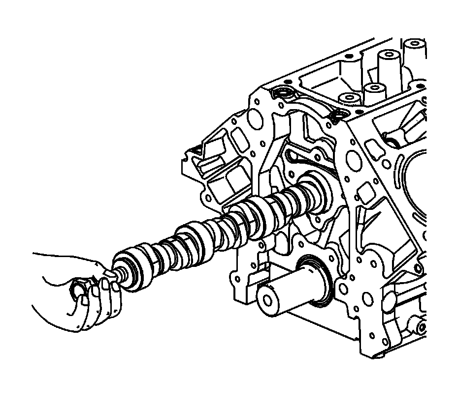
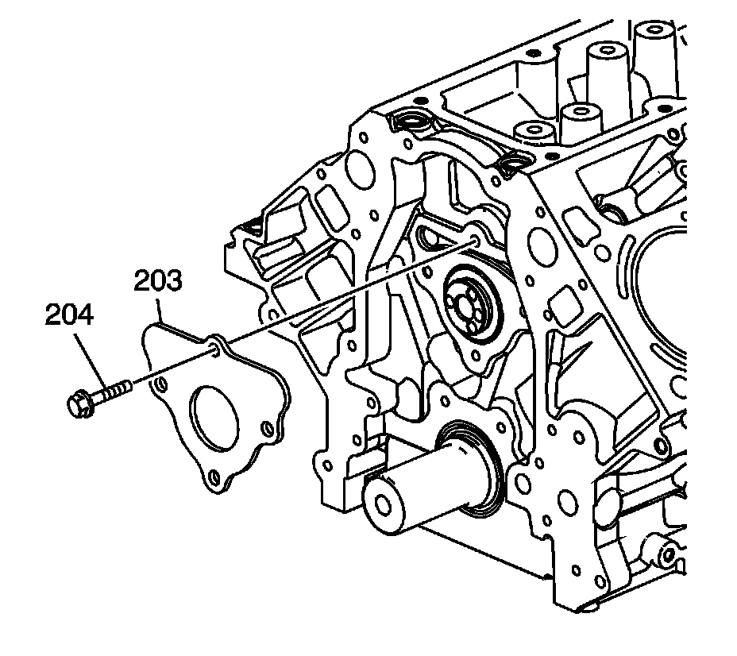
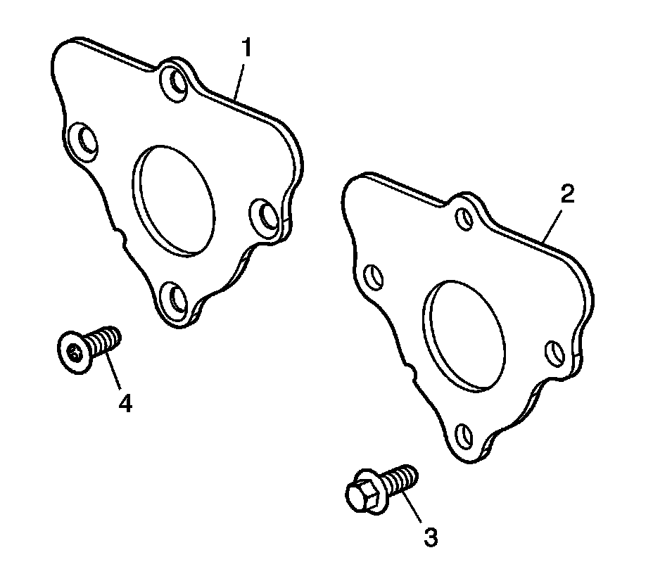

71. Camshaft Installation
Camshaft Installation

Important: If camshaft replacement is required, the valve lifters must also be replaced.
1. Lubricate the camshaft journals and the bearings with clean engine oil.
2. Install the camshaft sprocket bolt into the camshaft front bolt hole.
Notice: All camshaft journals are the same diameter, so care must be used in removing or installing the camshaft to avoid damage to the camshaft bearings.
3. Using the bolt as a handle, carefully install the camshaft into the engine block.
4. Remove the bolt from the front of the camshaft.

Important: The gasket surface on the engine block should be clean and free of dirt or debris.
5. Install the camshaft retainer (203) and the bolts (204). Install the retainer with the sealing gasket facing the front of the engine block.

Notice: Refer to Fastener Notice.
6. Tighten the camshaft retainer bolts.
^ Tighten the first design hex head bolts (3) to 25 N.m (18 lb ft).
^ Tighten the second design TORX(R) head bolts (4) to 15 N.m (11 lb ft).